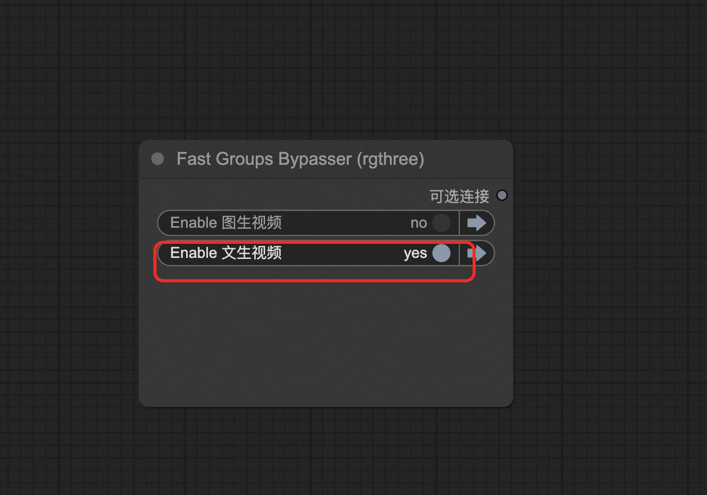

🎬 Wan2.1-T2V-14B 文本生视频模型
从文字到视频，让想象力成为现实！强大的AI视频生成引擎
🧠 14B参数
🎯 高质量
⚡ 专业级
🌟 模型简介
**Wan2.1-T2V-14B** 是一个革命性的文本到视频生成模型，能够在给定文本提示的情况下生成令人惊叹的高质量视频内容。无论是创意表达还是商业应用，都能为您带来无限可能！
✨ 核心特性
🧠 强大参数规模
14B参数量，提供卓越的理解和生成能力
🏗️ 先进架构
扩散变换器 + VAE，技术领先
⚡ 内存优化
FP8量化技术，高效GPU利用
🌍 多语言支持
中英文双语，无障碍创作
🎭 复杂场景理解
深度理解文本，生成逼真场景
🎥 专业品质
电影级视频质量，商业应用就绪
🔧 技术规格
📖 使用指南
🌐 方式一：ComfyUI 可视化界面
### 🚀 快速开始
**步骤 1：访问界面**
单击服务实例处的访问链接
 **步骤 2：选择工作流**
按图中指引选择工作流侧栏，选择 `wanx-21.json` 或 `wans.json` 并打开
**步骤 2：选择工作流**
按图中指引选择工作流侧栏，选择 `wanx-21.json` 或 `wans.json` 并打开
 **步骤 3：选择功能**
在下图处选择文生视频功能
**步骤 3：选择功能**
在下图处选择文生视频功能
 **步骤 5：设置参数**
在 ImageClip Encode 处可设置图片的分辨率和帧数
**步骤 5：设置参数**
在 ImageClip Encode 处可设置图片的分辨率和帧数
 ### 📚 更多参数说明
- [ComfyUI官方文档](https://comfyui-wiki.com/zh/interface/node-options)
- [WanVideo插件详细文档](https://github.com/kijai/ComfyUI-WanVideoWrapper/blob/main/readme.md)
### 📚 更多参数说明
- [ComfyUI官方文档](https://comfyui-wiki.com/zh/interface/node-options)
- [WanVideo插件详细文档](https://github.com/kijai/ComfyUI-WanVideoWrapper/blob/main/readme.md)

**步骤 4：编写提示词**
在 TextEncode 处填写描述词
✅ 上方输入框
你想要生成的内容
❌ 下方输入框
你不想要生成的内容
🔌 方式二：API 程序化调用
🔑 获取认证信息
🎫 获取 Token
点击右上方按钮，打开底部面板，获取token

🌐 获取服务器地址
COMFYUI_SERVER 的获取可参考

💻 Python 代码实现
🐍 点击展开完整 Python API 代码
import requests, json, uuid, time, random
# 🔧 配置参数
COMFYUI_SERVER, COMFYUI_TOKEN = "输入您的服务器地址", "输入您的token"
T5_MODEL = "wan2.1/umt5-xxl-enc-bf16.safetensors"
VIDEO_MODEL = "Wan2_1-T2V-14B_fp8_e4m3fn.safetensors"
VAE_MODEL = "wan2.1/Wan2_1_VAE_bf16.safetensors"
class ComfyUIClient:
"""🎬 ComfyUI 视频生成客户端"""
def __init__(self, server=COMFYUI_SERVER, token=COMFYUI_TOKEN):
self.base_url = f"http://{server}"
self.token = token
self.client_id = str(uuid.uuid4())
self.headers = {
"Content-Type": "application/json",
**({"Authorization": f"Bearer {token}"} if token else {})
}
def generate_t2v(self, prompt, neg_prompt="", steps=15, cfg=6, width=832, height=480, frames=81):
"""
🎥 生成视频
Args:
prompt (str): 正向提示词
neg_prompt (str): 负向提示词
steps (int): 推理步数
cfg (float): CFG引导强度
width (int): 视频宽度
height (int): 视频高度
frames (int): 视频帧数
Returns:
str: 任务ID
"""
print(f"🎬 开始文本生视频任务...")
print(f"📝 提示词: {prompt}")
workflow = {
"1": {
"inputs": {
"model_name": T5_MODEL,
"precision": "bf16",
"load_device": "offload_device",
"quantization": "disabled"
},
"class_type": "LoadWanVideoT5TextEncoder"
},
"2": {
"inputs": {
"positive_prompt": prompt,
"negative_prompt": neg_prompt,
"force_offload": True,
"t5": ["1", 0]
},
"class_type": "WanVideoTextEncode"
},
"3": {
"inputs": {
"model": VIDEO_MODEL,
"base_precision": "bf16",
"quantization": "fp8_e4m3fn",
"load_device": "offload_device",
"attention_mode": "sageattn"
},
"class_type": "WanVideoModelLoader"
},
"4": {
"inputs": {
"width": width,
"height": height,
"num_frames": frames
},
"class_type": "WanVideoEmptyEmbeds"
},
"5": {
"inputs": {
"model_name": VAE_MODEL,
"precision": "bf16"
},
"class_type": "WanVideoVAELoader"
},
"6": {
"inputs": {
"steps": steps,
"cfg": cfg,
"shift": 5,
"seed": random.randint(1, 1000000),
"force_offload": True,
"scheduler": "dpm++",
"riflex_freq_index": 0,
"denoise_strength": 1,
"batched_cfg": False,
"rope_function": "comfy",
"model": ["3", 0],
"text_embeds": ["2", 0],
"image_embeds": ["4", 0]
},
"class_type": "WanVideoSampler"
},
"7": {
"inputs": {
"enable_vae_tiling": True,
"tile_x": 272,
"tile_y": 272,
"tile_stride_x": 144,
"tile_stride_y": 128,
"vae": ["5", 0],
"samples": ["6", 0]
},
"class_type": "WanVideoDecode"
},
"8": {
"inputs": {
"frame_rate": 16,
"loop_count": 0,
"filename_prefix": "T2V_14B_generated",
"format": "video/h264-mp4",
"pix_fmt": "yuv420p",
"crf": 19,
"save_metadata": True,
"trim_to_audio": False,
"pingpong": False,
"save_output": True,
"images": ["7", 0]
},
"class_type": "VHS_VideoCombine"
}
}
print("🚀 提交视频生成任务...")
response = requests.post(
f"{self.base_url}/prompt",
headers=self.headers,
json={"prompt": workflow, "client_id": self.client_id}
)
print(f"📡 API Response: {response.text}")
result = response.json()
if "error" in result:
raise Exception(f"❌ 工作流错误: {result['error']}")
if "prompt_id" not in result:
raise Exception(f"❌ 响应中没有 prompt_id: {result}")
return result["prompt_id"]
def get_status(self, task_id):
"""📊 获取任务状态"""
try:
queue_data = requests.get(f"{self.base_url}/queue", headers=self.headers).json()
# 检查是否在运行队列中
if any(item[1] == task_id for item in queue_data.get("queue_running", [])):
return "processing"
# 检查是否在等待队列中
if any(item[1] == task_id for item in queue_data.get("queue_pending", [])):
return "pending"
# 检查历史记录
history_response = requests.get(f"{self.base_url}/history/{task_id}", headers=self.headers)
if history_response.status_code == 200 and task_id in history_response.json():
return "completed"
return "processing"
except:
return "processing"
def download_video(self, task_id, output_path="t2v_14b_generated.mp4"):
"""📥 下载生成的视频"""
try:
response = requests.get(f"{self.base_url}/history/{task_id}", headers=self.headers)
history = response.json()
if task_id in history:
for output in history[task_id]['outputs'].values():
if 'gifs' in output:
filename = output['gifs'][0]['filename']
video_response = requests.get(
f"{self.base_url}/view?filename={filename}",
headers=self.headers
)
with open(output_path, "wb") as f:
f.write(video_response.content)
return output_path
return None
except Exception as e:
print(f"❌ 下载错误: {e}")
return None
def main():
"""🎬 主函数 - 视频生成示例"""
client = ComfyUIClient()
try:
print("🎭 开始文本生视频任务...")
# 🎨 示例提示词
prompt = "A beautiful anime girl with long black hair dancing gracefully in a cherry blossom garden, soft lighting, cinematic quality, high detail, smooth animation"
neg_prompt = "low quality, blurry, distorted, bad anatomy, static, choppy animation, artifacts"
print(f"📝 提示词: {prompt}")
print(f"🚫 负向提示词: {neg_prompt}")
# 🚀 提交生成任务
task_id = client.generate_t2v(
prompt=prompt,
neg_prompt=neg_prompt,
steps=20,
cfg=7,
width=832,
height=480,
frames=81
)
print(f"🆔 任务ID: {task_id}")
# 📊 监控任务状态
while True:
status = client.get_status(task_id)
print(f"📈 当前状态: {status}")
if status == "completed":
print("✅ 视频生成完成!")
break
elif status == "failed":
print("❌ 生成失败!")
exit(1)
time.sleep(10)
# 📥 下载视频
output_file = client.download_video(task_id, "my_t2v_14b_video.mp4")
if output_file:
print("🎉 视频下载成功!")
print(f"📁 保存位置: {output_file}")
else:
print("❌ 视频下载失败!")
except Exception as e:
print(f"💥 发生错误: {e}")
if __name__ == "__main__":
main()
🎯 创作技巧与最佳实践
✍️ 提示词编写指南
✅ 正向提示词技巧
- 具体描述：详细描述场景、人物、动作
- 风格指定：添加艺术风格、光照效果
- 质量词汇：使用 "high quality", "cinematic" 等
- 动作描述：明确指定想要的动态效果
❌ 负向提示词建议
- 质量控制："low quality", "blurry", "distorted"
- 避免静态："static", "motionless", "frozen"
- 解剖正确："bad anatomy", "deformed"
- 技术问题："artifacts", "noise", "compression"
🎨 创意示例
**🌸 动漫风格**
A beautiful anime girl with flowing pink hair dancing in a field of cherry blossoms,
soft wind, petals falling, golden hour lighting, studio ghibli style, high quality
Futuristic cityscape at night, neon lights reflecting on wet streets,
flying cars in the distance, cyberpunk aesthetic, cinematic composition
Majestic waterfall cascading down moss-covered rocks, rainbow mist,
lush green forest, birds flying, peaceful atmosphere, 4K quality
Professional dancer performing contemporary dance on stage,
dramatic lighting, flowing fabric, graceful movements, artistic composition
🔧 参数优化建议
⚙️ 基础设置
- 步数: 20-25步获得最佳质量
- CFG: 6-8范围内调整
- 分辨率: 832×480为推荐设置
🎯 质量优化
- 帧数: 根据内容复杂度调整
- 种子: 固定种子获得一致结果
- 调度器: DPM++效果较好
📚 相关资源与文档
🎬 开始您的视频创作之旅！ | 用 Wan2.1-T2V-14B 将您的创意变为现实
© 2009-2022 Aliyun.com 版权所有